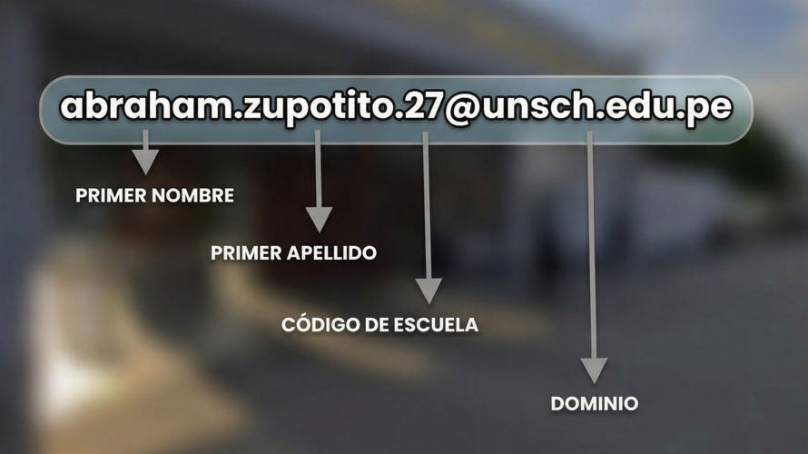
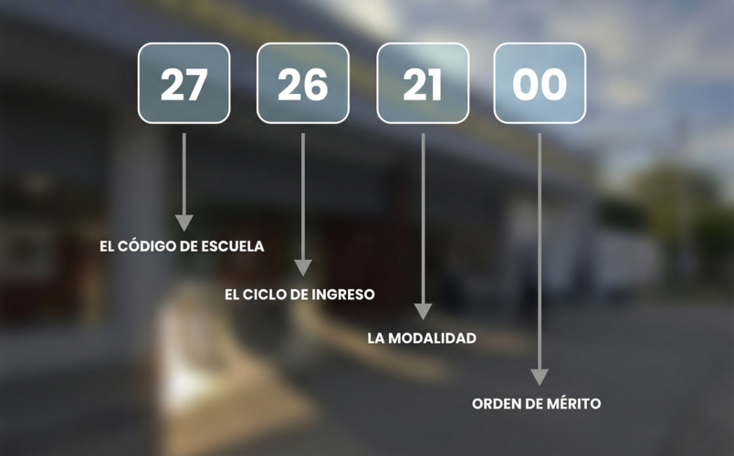

Todo lo que necesitas saber para empezar con el pie derecho en la UNSCH
Tu correo de la UNSCH es tu identidad digital como estudiante. Úsalo para acceder a plataformas académicas, trámites y comunicaciones oficiales.

Es tu identificador único en la universidad. Lo necesitarás para matrícula, trámites y acceso a sistemas académicos.

Es el proceso en el que eliges y te inscribes en los cursos que llevarás durante el ciclo académico.
Se realiza al inicio de cada semestre y debes hacerlo en las fechas establecidas para no perder tu condición de alumno regular.
La matrícula se realiza a través del Campus Virtual de la universidad.
El semestre académico es el periodo de tiempo en el que se llevan clases de los cursos de acuerdo al plan de estudios. Comprende 16 semanas.
Una serie comprende 2 ciclos académicos. Dependiendo de la escuela profesional encontramos:
En un año se llevan 2 ciclos o semestres académicos:
Un crédito es el peso relativo del curso que llevarás. Un curso puede tener 1, 2, 4 o 5 créditos — son como puntos que vale cada curso. Los créditos sirven para pasar al siguiente ciclo.
Cuando aprobaste todo (invicto), te dan 4 créditos adicionales para adelantar cursos de ciclo superior.
Llamados también cursos con secuencia. Son aquellos que debes haber aprobado sí o sí para poder matricularte en otro.
Ejemplo: Si Cálculo I es requisito para Cálculo II y jalas el primero, se te "cierra" el segundo y te atrasas un semestre.
Depende: si el curso tiene secuencia, no podrás llevar su continuación. Si no tiene secuencia, lo puedes llevar en otro momento sin retrasarte un año en la universidad.
Depende del docente. Generalmente tienes 2 o 3 exámenes: 1 o 2 parciales y un final. También tendrás controles de lectura, trabajos individuales o grupales, prácticas calificadas y trabajos semestrales.
Normalmente 6 a 7 cursos, sin embargo esto puede variar de acuerdo a tu desempeño académico.
Sí, pero debes matricularte en al menos 12 créditos para mantener tu condición de alumno regular y no perder beneficios como el comedor, bienestar, el carnet universitario o postular a una beca.
La nota mínima aprobatoria es 11. Si tu promedio final es 10.5, el sistema lo redondea automáticamente a 11 y estás aprobado.
Es el máximo órgano de gobierno — el "Congreso" de la universidad. Toma las decisiones más grandes: elegir al Rector, aprobar o cambiar el Estatuto y crear o cerrar escuelas profesionales.
Es el órgano ejecutivo. Aprueba el calendario académico, los presupuestos, reglamentos de matrícula, grados y títulos, y resuelve problemas administrativos urgentes.
Es la unidad más grande que agrupa carreras parecidas. La autoridad máxima de una facultad es el Decano.
Es una carrera específica dentro de una facultad. Es donde perteneces tú como estudiante. Aquí se define tu malla curricular, tus profesores y el título que recibirás. La autoridad es el Director de escuela.
La OTI es la Oficina de Tecnologías de la Información, encargada de gestionar la infraestructura tecnológica, los sistemas académicos (como el SIIGE para matrículas), el correo institucional y la conectividad de la universidad. Juega un rol clave en la digitalización de procesos administrativos y académicos.
La FUSCH es el máximo órgano de representación y defensa de los estudiantes de la UNSCH. Canaliza las demandas estudiantiles ante las autoridades universitarias y el Estado. Se elige mediante elecciones estudiantiles con un periodo de 1 año.
Es el órgano gremial que representa exclusivamente a los alumnos de una carrera específica, conformada por estudiantes de cada serie o base. Su objetivo es velar por los intereses académicos y el bienestar de los estudiantes de esa escuela.
El periodo de mandato es de 1 año, elegidos mediante voto universal de todos los alumnos matriculados en esa escuela profesional.
La beca más solicitada. Te exonera del pago de alimentación (desayuno, almuerzo y cena). Requiere evaluación socioeconómica y ser alumno regular. Convocatoria al inicio de cada semestre por la OBU.
Para intercambio en otras universidades del país o extranjero. A partir del quinto ciclo siendo tercio superior.
Para alumnos con buen rendimiento y bajos recursos. Subvención mensual para movilidad, útiles y alimentación. Desde el segundo ciclo.
Te permite estudiar un semestre en otra universidad top del Perú como la PUCP u otras de la red.